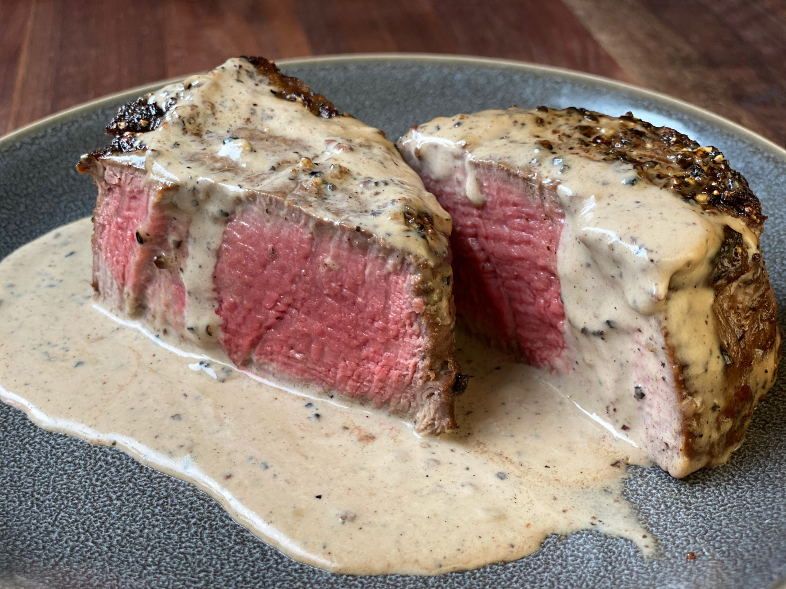

Stake au Poivre
Ingredients
- 400g of filet mignon in medallions
- 2 tablespoons of butter
- A firstful of black pepper
- 1/2 cup of White wine
- 1 teaspoon Dijon Mustard
- 2 cups of fresh milk cream
How to prepare
- grind the pepper using a pestle, not too fine
- cover the meat with the pepper not the firmly, what gets attatch gets attached
- at a frying pan add the butter until it browns
- seal the meat at all sides, it should be medium rare and let it rest
- turn off the heat and add the white wine to the hot pan to remove the fond mix it up with the milk cream, the mustard and the rest of the peper
- cut the meet in generous slices dress it up and serve
